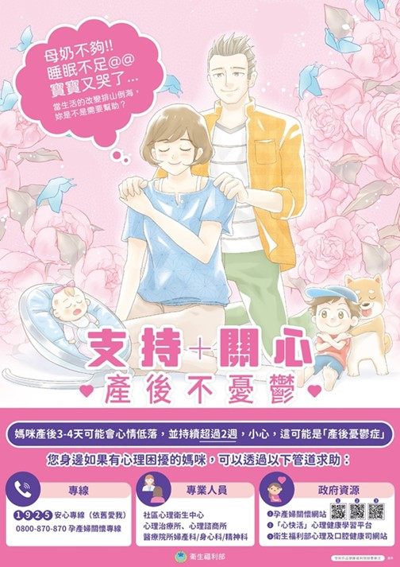
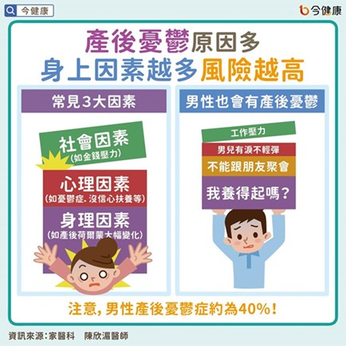
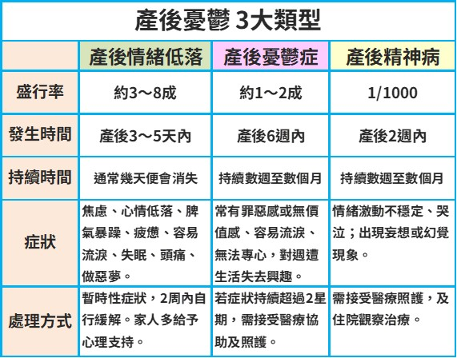
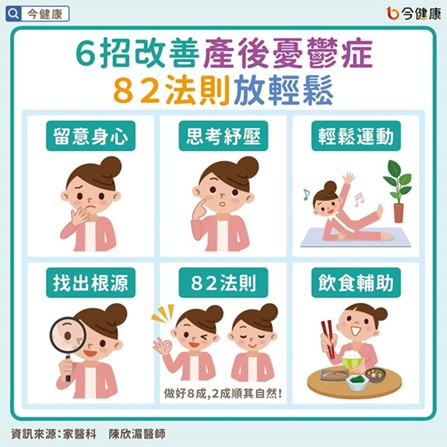

月號－哺乳育嬰站
月號－哺乳育嬰站產後心理調適與身體狀況之間存在密切的互動關係，兩者相互影響，對新手媽媽的整體健康至關重要。部分婦女在生產後，會產生一些情緒低落或心情不穩定現象，但這些現象大部分會在幾天後消失，少部分症狀嚴重之個案，便需要專業協助介入治療。但因這些症狀可能是不自覺，或常被家屬或周遭親友忽視，以致無法及時給予適當的幫忙，而造成個人及家庭的困擾，甚至傷害等情況。 |
|  |
| 一、根據心理學家Rubin提出的母親角色分期，產後心理調適可分為三個階段： |
|
● 接受期（產後2-3天）：此時媽媽多將注意力放在自身身體狀況與生產經驗，身體疲憊且心理尚未完全轉換到母親角色，容易感到情緒波動或焦慮。 ● 緊執期（產後3-10天）：媽媽開始將生活重心轉向寶寶，積極學習照顧新生兒，但此時身體仍處於恢復階段，疲勞感強烈，若休息不足或缺乏支持，容易引發心理壓力。 ● 放手期(產後10天至3個月）：媽媽逐漸接受母親角色，身體狀況逐步恢復，心理狀態較穩定，但仍需持續調適生活節奏與角色轉變。 |
| 二、為什麼會發生產後憂鬱症？ |
|
產後憂鬱症發生的原因目前仍不明，可能跟生理、心理及社會因子有關，例如：周產期發生重大生活壓力事件、生產時體力耗費及生產經歷重大身心創傷等，亦可能引起產後憂鬱後遺症；此外產後媽媽須負擔照顧新生兒的角色，或因懷孕造成身體外觀的改變等，也會造成憂鬱。 陳欣湄醫師也提醒，不論是先生或太太在產後都應留意，並彼此體諒，盡可能理性的溝通，避免歇斯底里，因為即便是女性朋友在產後容易有產後憂鬱的情況，普遍社會價值觀也認為男生應多讓女生，但其實正面臨這個問題的不只有太太，先生也同時正面臨這樣的困境。 |
|  |
|
三、產後憂鬱依嚴重症度可分為「產後情緒低落」、「產後憂鬱症」、「產後精神病」三種，發生時間，持續多久、症狀、處理方式都有所差異。 |
|  |
| 四、如何知道自己有無產後憂鬱症 |
|
建議產後媽媽可以利用下面兩個問題，進行簡易評估： 1. 過去一個月，是否常被情緒低落、憂鬱或感覺未來沒有希望所困擾？ |
|
如果上述問題的確發生在您的身上時，我們強烈建議您告訴您的配偶或尋求親友協助，或透過心理衛生機構協談及轉介，應立即尋求醫療協助，以避免傷害發生。 |
| 五、6招改善產後憂鬱症，82法則放輕鬆 |
|
在改善產後憂鬱症方面，陳欣湄醫師則建議先從檢視自己的身心狀況及簡單的運動等方式開始進行。目前公認對於改善產後憂鬱症，最簡單也最推薦的運動就是瑜珈和氣功，這樣的輕、中度運動對於改善產後憂鬱症是相當有利的。而許多人會想一邊減肥而進行較高強度的運動，陳欣湄醫師則不建議這麼作，除非是平常就有這樣的運動習慣，否則應避免進行跑步或登山等較高強度的運動，以免對身體造成更多壓力的累積，不利於改善產後憂鬱症。 除了運動外，可以檢視生活上究竟有哪些事情是造成現在壓力的主要原因，並適度的調整自己對事物的看法，避免對自己要求過高，凡事不用做到完美，以「82法則」的方式讓自己放輕鬆，也就是100分只要做到80分就好，剩下20分讓其順其自然，留給自己喘息的空間及時間為佳；同時也可以思考做什麼樣的事情會感到快樂，可多從事這樣的事情，對於改善產後憂鬱症也相當有幫助。 若想以飲食做改善的話，陳欣湄醫師建議以輔助的方式進行，以避免後續可能要面臨的就是體重飆升的問題。除了盡量避免甜食外，可多攝取深綠色蔬菜、複合性B群、Omega-3、維生素C、鎂等，這些都是有利於改善產後憂鬱症的。 |
|  |
| 六、結語 |
|
產後心理變化是每位媽媽都可能面臨的重要課題。了解產後憂鬱的常見徵兆與高風險狀態，有助於及早察覺異常情緒，並適時尋求支持與協助。多數產後情緒低落屬於暫時性反應，在家人陪伴與關懷下可逐漸改善。若症狀持續惡化或影響日常生活，則應儘早就醫，以獲得妥善的專業照護。 |
資料來源
1. 談產後心靈的變化－宏其婦幼醫院的部落格｜痞客邦 |